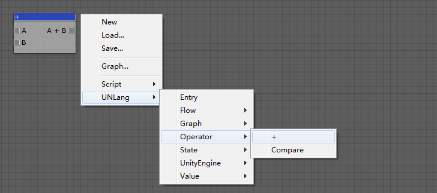
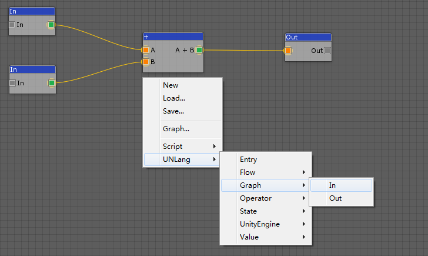
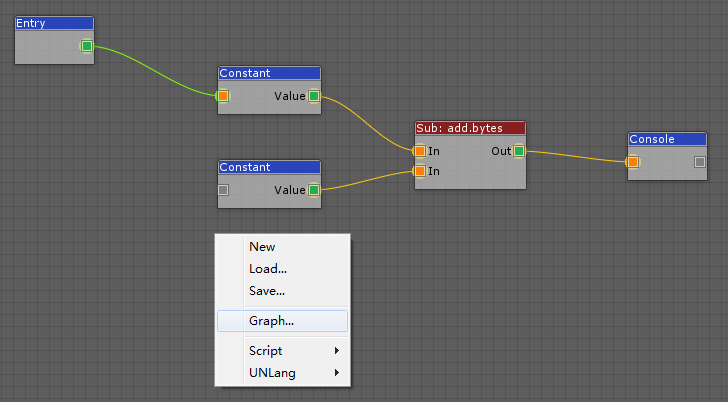

UNLang Graph could package a UNLang script to an isolated module and be reused by other scripts. It’s a high level reuse for UNLang to abstract UNLang script.
The key step user must do is connecting In and Out modules in UNLang script to define the input parameters and return values of the Graph.
Input Value
A Graph should define the input values, then UNLang could understand the Graph entrance and know how to connect with other module. Just like input parameters of function.
Use
UNLang/Graph/Inmodule.
Return Value
A Graph also could define the output result if it has.
Use
UNLang/Graph/Outmodule.
Example
Let’s make a UNLang script to implement integer addition (a + b = c) feature of calculator.
Create add Graph
① Create “+” module
- Use
UNLang/Operator/+module as follows.
 - Set
+module value type toIntegerin theInspectorwindow.
② Connect “In” and “Out” module
- Add
UNLang/Graph/InandUNLang/Graph/Outmodules. - Set
InandOutmodule value type toIntegerin theInspectorwindow. - Connect as follows.

③ Save to add.bytes
Use add Graph
- Import
addgraph by clickingGraph...menu and chooseadd.bytesfile. - Setup the script as follows: Two constant values and print to console.
- Use
Entrymodule as the beginning.

Summary
The Graph will hide all detail modules but only show In and Out pins of the script. So Graph is a good way to abstract a complex script and make it as a module to be reused by other script in UNLang.